Tutorials
These examples teach us how to complete various tasks using PyGMT!
Basics


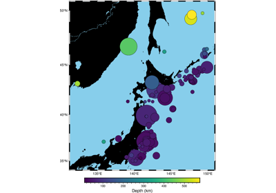
Plotting data points
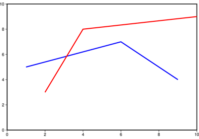
Plotting lines
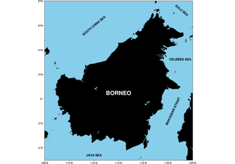
Plotting text

Advanced
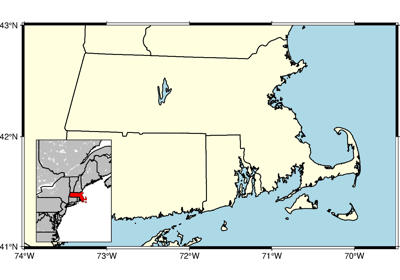
Adding an inset to the figure
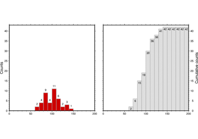
Cartesian histograms
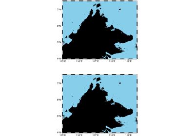
Configuring PyGMT defaults
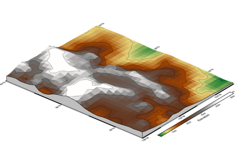
Creating a 3-D perspective image
Creating a 3-D perspective image
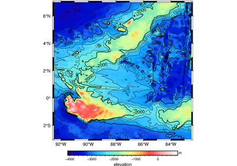
Creating a map with contour lines
Creating a map with contour lines


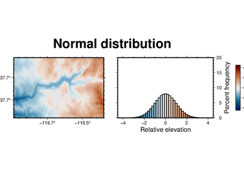
Performing grid histogram equalization
Performing grid histogram equalization

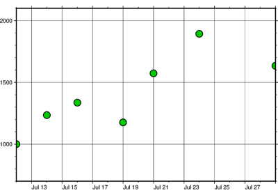
Plotting datetime charts
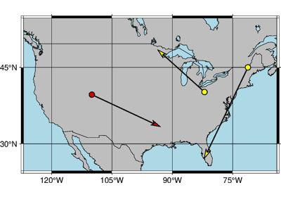
Plotting vectors